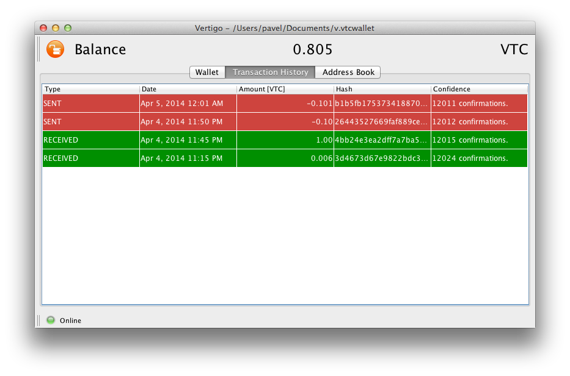

Vertigo is a Lightweight Vertcoin Wallet designed to end the frustrating waiting time downloading gigabytes of block chain! Vertigo has an extremely smooth interface. It was created with the intent and success of being exceedingly end-user friendly. Vertigo utilizes an interface that is uncomplicated and easy to navigate. New features are added upon request!

Vertigo is free and open source! (MIT license)
Development takes substational amount of time and effort!
If you find Vertigo useful and you would like to help or to see new features,
further improvements, tunnings and fixes, please consider donating Vertcoin.
Your donation helps to pay development time,
helps to pay for server costs and
for giving you helping hand and support any time if needed.
And allows to give you regular and frequent updates.
Thank you!
VertGv5nVwYYR7mTmDDeAP9et1NJyAsC9P
If you need help with anything, we will try to help you 24/7/365, just contact us.
Follow @Vertigo_Walletinfo[at]vertigowallet.org